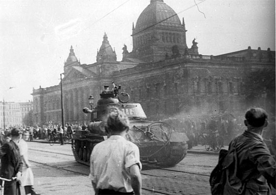
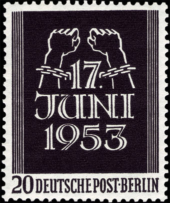
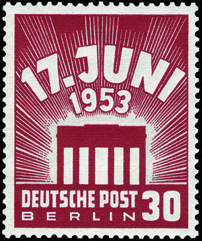
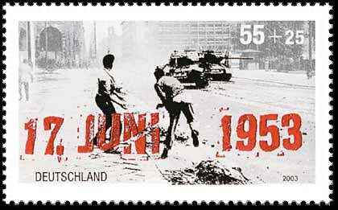
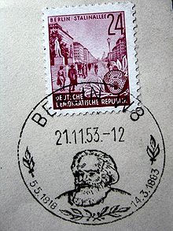

THE NATIONAL UPRISING IN DDR - 1953
Today I read the following news release (excerpt), that inspired the philatelic page that follows:"Associated Press: Germany commemorates 1953 workers' uprising against communist regime.
Published June 17, 2010BERLIN (AP) - Germany is marking the anniversary of a failed worker-led uprising against East Germany's communist rulers that was crushed by Soviet tanks.
Lawmakers in Germany's parliament said Thursday that the 1953 uprising was an early cry for freedom from eastern Europe and for German reunification. ...."
Leipzig, about 17 June 1953. Soviet Tank.The Uprising of 1953 in East Germany started with a strike by East Berlin construction workers on June 16. It turned into a widespread uprising against the Stalinist German Democratic Republic government the next day. The uprising in Berlin was violently suppressed by tanks of the Group of Soviet Forces in Germany and the Volkspolizei. In spite of the intervention of Soviet troops, the wave of strikes and protests was not easily brought under control. Even after June 17, there were demonstrations in more than 500 towns and villages.
The decision to raise the work norms (in short the principle 'more work for the same salary') was perceived as a provocation, which would conceivably lead to deterioration of the living standard. The Central Committee decided to address the economic difficulties with a package of changes, which included higher taxes and higher prices, and — most significantly — an increase of the work quotas by 10%.[1] These changes were to come into force by June 30, 1953: Ulbricht's 60th birthday. Issued as a suggestion, it became in effect a direction that was introduced in all the state-owned enterprises (so-called volkseigene Betriebe) and if the new quotas were not met then workers would have to face a reduction of salaries. The decision was taken on May 13–14, 1953, and the Council of Ministers approved it on May 28.
Early on June 17, 40,000 protesters had gathered in East Berlin, with more arriving throughout the morning. Many protests were held throughout East Germany with at least some work stoppages and protests in virtually all industrial centers and large cities in the country.
The original demands of the protesters, such as the reinstatement of the previous lower work quotas, turned into political demands. SED functionaries took to the streets and began arguing with small groups of protesters. Eventually, the workers demanded the resignation of the East German government. The government decided to use force to stop the uprising and turned to the Soviet Union for military support. In total, around 16 Soviet divisions with 20,000 soldiers as well as 8,000 Volkspolizei members were utilized to quell the uprising.


First Day of Issue 17 August 1953. Michel Catalogue No: 110 - 111 (Berlin) In Berlin, major clashes occurred along Unter den Linden (between the Brandenburger Tor and Marx-Engels-Platz), where Soviet troops and Volkspolizei opened fire, and around Potsdamer Platz, where several people were killed by the Volkspolizei. It is still unclear how many people died during the uprising or were sentenced to death in the aftermath. The number of known victims is 55; other estimates put the number of victims at least 125.
In memory of the 1953 East German rebellion, West Germany established 17 June as a national holiday, called "Day of German Unity". Upon German reunification in October 1990, it was moved to 3 October, the date of formal reunification. The extension of the boulevard Unter den Linden to the west of the Brandenburg Gate, called Charlottenburger Chaussee, was renamed Straße des 17. Juni (English: "June 17th Street") following the 1953 rebellion.
The event was commemorated on the Germany stamp of 12 Juin 2003, 50th anniversary of the Uprising of 1953 in East Germany, 0.55 + 0.25 Euro. Design: Ernst Jünger and Lorli Jünger, print run: 3.720.000. Michel No. 2342.

The event is commemorated also in the belated commentary of Bertolt Brecht, printed first time in 1959, long after his death. Officially Brecht had supported the measures taken by the East German government to crush the uprising, including the use of Soviet military force..
After the uprising of the 17th of June
The Secretary of the Writers Union
Had leaflets distributed in the Stalinallee
Stating that the people
Had forfeited the confidence of the government
And could win it back only
By redoubled efforts. Would it not be easier
In that case for the government
To dissolve the people
And elect another?
Stamp: Five Years Plan. Stalinalee in Berlin. First Day Cancel. Main Source . Later we will see again tanks that crush revolts against communism in Budapest (1956), Prague (1968) and Beijing (1989)...
Created: 06/17/10. Revised: 1/9/2024 .
Copyright © 2010 - 2024 by Victor Manta, Switzerland/USA.
All rights reserved worldwide.